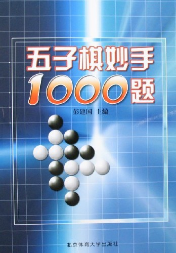

关于《五子棋妙手1000题》的讨论
#1 关于《五子棋妙手1000题》的讨论 作者：gerbo 发表时间：2007-3-9 19:04:07
大家又有口福了，北京体育出版社出版《五子棋妙手1000题》，现已出版，定价42.00元，欢迎大家前去参阅~
#2 Re:推荐一本新书 作者：有志青年 发表时间：2007-3-9 21:08:36
好像是彭建国写的？
#3 Re:推荐一本新书 作者：gerbo 发表时间：2007-3-9 21:24:55
彭建国出的新书。很难看到他出书，现在他又出书了，大家好好抓住机会，相信能给大家惊喜~ 我还没买了，赶紧去书店看看了~！抢一本算一本拉~！
我还没买了，赶紧去书店看看了~！抢一本算一本拉~！
#4 Re:推荐一本新书 作者：江南新绿 发表时间：2007-3-9 21:54:22
自己都没有看到，就在义务推销了。hoho
#5 Re:推荐一本新书 作者：gerbo 发表时间：2007-3-9 23:42:56
呵呵，偶可以该行做推销了。
江南大哥给捉下虫子哟~~
官方有所鞭长莫及的地方，也需要民间大力的交流，作为五子棋忠实的热爱者，希望能出现更多更新更高水平的书籍。据我了解，江南的溪月终结正在顺利进展中，希望能早日出版，在此，我祝江南全家幸福，猪年收获多多~！
#6 Re:推荐一本新书 作者：极地剑客 发表时间：2007-3-10 14:48:41
偶昨天才去新华书店看了地~没这本书哦~郁闷~42？看来比以前出的书都贵多啦~#7 Re:推荐一本新书 作者：江南新绿 发表时间：2007-3-10 17:16:17
贵,到是不觉得.只是觉得多有雷同,不买也罢.
淘宝上的书你们自己去看看,有多少是值钱的.
#8 Re:推荐一本新书 作者：gerbo 发表时间：2007-3-11 15:44:48
 打击一大片~~汗~！
打击一大片~~汗~！
#9 Re:推荐一本新书 作者：极地剑客 发表时间：2007-3-11 16:01:49
那没有哦~主要偶还没看见书的内容的~不知道里面是啥题目哦~#10 Re:推荐一本新书 作者：gerbo 发表时间：2007-3-11 18:11:19
刚去新华书店了,又没有啊~!!现在那的五子棋的书都摆在那半年了都没什么人买,真是不景气~~
谁知道哪里有五子棋的专卖店啊,我一定可以算是大单了~~!
拿个40G的移动硬盘,走到哪,拷到哪~有资料的,统统上缴,嘿嘿~~(刚做了个梦,汗~)
#11 Re:推荐一本新书 作者：yidefei 发表时间：2007-3-12 12:09:25
我买了！还行吧。
有的题目的答案好像有些问题，或者题目有些问题也说不定。
#12 Re:推荐一本新书 作者：小丸.net 发表时间：2007-3-12 18:57:44
我也买到了这本书，还不错。。。。
#13 Re:推荐一本新书 作者：无天 发表时间：2007-3-16 10:29:21
这应该不算新书了.#14 Re:推荐一本新书 作者：屏蔽 发表时间：2007-3-16 21:24:45
某日在图书大厦看到，就买……
第一天晚上，选做了前50道题，第一感觉：题目难度差异太大，没有阶梯性。有的题目三步就出来了，有的题目要连攻十好几步，好要做棋做杀！
第二天晚上，把第一天没有一眼解决的题目（大概20道）再看一遍，第二感觉：题目不严谨。有的题目的答案没有强防的解答，这个拆拆出来了还好，有的题目根本就不能胜，还有一些题目出得明显有问题。
#15 Re:Re:推荐一本新书 作者：清逸 发表时间：2007-3-16 21:42:48

今天打北京体育大学出版社--读者服务电话（010-62989432）接电话的男士居然说不知道此书
#16 Re:推荐一本新书 作者：gerbo 发表时间：2007-3-17 3:07:49
此人肯定不玩连珠的，证明连珠的普及推广工作是长期的过程，更需要大力的推广，让人人都知道连珠，参与连珠，建设连珠。#17 Re:推荐一本新书 作者：江南新绿 发表时间：2007-3-17 9:15:29
屏蔽和清逸也在 。见到你们太高兴了。留个邮箱和电话过来。
#18 Re:推荐一本新书 作者：17号蓝星仔 发表时间：2007-3-17 11:30:00
悲哀 我这里什么五子棋的书都没有#19 Re:推荐一本新书 作者：无尽 发表时间：2007-3-17 11:49:51
我等图书馆有了才取借，哈哈。
关注14楼提到的情况 这也是我一看到这本新书出版所想到的问题
#20 Re:推荐一本新书 作者：屏蔽 发表时间：2007-3-17 13:01:51
目前我所接触过的五子棋书籍：
1、《五子棋选点诀窍》（彭建国 李洪斌）

推荐用法：非常好的寒星必胜全谱！讲解很到位，后面的题目也很好。直接看就可以了。
2、《五子棋争先妙手》（彭建国 包明慧）

推荐用法：虽然说是主要介绍瑞星局，但其实一并对明星局、金星局、寒星局、恒星局也做了介绍，能使人对这些局面的开局有一个大概的印象，不过定式稍微落后一点。后面选的实战对局有一半左右水平都不太高，习题也有些错误，可以参考使用。
3、《五子棋九段感觉》（彭建国）

推荐用法：不要看讲解，直接根据棋谱自己分析（有些图谱有很明显的错误，读者可以自行纠正），其余的“变化”应该理解为定式介绍，也是只看棋谱就可以了，棋型强弱自己判断。练习题尚可。
4、《五子棋升段必读》（彭建国 包明慧）

推荐用法：前面的部分想看就看；中间的五手两打选点要记一下；后面的花月局、浦月局必胜谱并不详细（只有最强的几路防守），但分析得不错；最后的松月局谱和实战对局、练习题都值得一看。
5、《五子棋开局指南》《五子棋占优技巧》（彭建国 张书）


推荐用法：这两本书的年头似乎比较久远，很多定式都被推翻了，有些讲解还是错的，大家仅供参考就可以了。两本书粗略地介绍了所有开局（除去花月局、浦月局、游星局、彗星局）的黑棋占优方法，只适用于白棋走出弱防的情况，是比较初级的书。
6、《连珠五子棋提高捷径》（那威 章照原）

推荐用法：详细介绍了花月局、浦月局的一打变化，覆盖面比较全，其他的介绍、题目等等也比较适合初学者，虽然有些必胜变化在书中没有介绍，但要想夯实基础，我首推此书。
7、《连珠路遥－五子棋取胜技巧解说》（陆瑶）

推荐用法：对疏星局的开局进行了比较详细的介绍，有一定分析能力的朋友可以把这本书作为进阶的书籍来使用，可以对疏星局有一个不错的认识；书中收录的实战对局值得分析一下，两手胜练习很不错（其中似乎有一道错题）VCF练习可以作为一个乐趣，也可以用于锻炼计算力（还有一本那威编的VCF习题集大家有的话也可以做着玩儿）。
8、《五子连珠必胜法》（新井华石）

推荐用法：一本很不错的书籍！虽然其中的定式有些跟不上潮流，但无论对初学者或是有一定水平的读者都能得到一定的启发，也是巩固基础的绝佳的书籍之一。同时通过这本书籍也可以一窥五子棋的历史和内涵。
9、《三手胜五子棋题解》（坂田吾朗）

推荐用法：非常好的书籍！建议从最开始看到末尾，再从最开始看到末尾……当你看着高级题不再那么困扰的时候，就会惊异地发现自己的计算力竟然已经有了如此大幅度的提高！
10、《五手二打总论》（斋藤秀一）
（暂无图片）
推荐用法：属于定式大全一类的书籍，记录了（主要是日本）大量的定式，是有一定水平的棋手了解定式、拓宽眼界、提高分析能力的重要书籍！目前国内似乎没有中文版出售，有条件的话当然找一个懂日语的朋友来辅助一下，没条件的话就自己分析其中的奥妙，幸好中文和日文在一定程度上也是相通的……
还有许多电子版书籍，在此不做赘述了。
［ 有志青年 于 2007-3-17 15:23:30 时奖励此帖[金币加 20 威望加1］
#21 Re:推荐一本新书 作者：yidefei 发表时间：2007-3-17 18:47:37
那本题目的书又多做了一些，发现有些题目呢，前面出现了，后面又来同样的题目，可见这本题集有一部分是在凑题目总数。为什么要这样做呢？难道就不能出版一本精品的题集吗？
#22 Re:关于《五子棋妙手1000题》的讨论 作者：屏蔽 发表时间：2007-3-22 12:34:16
撇开这本书的质量不谈，其实出题目本身就是一件非常困难的事情——如果题目完全来源于自身的判断，那就必然夹杂自己的思想在其中，不同的题目在不同的人看来难度自然就是不同的，有的时候看《三手胜》都会感觉有的高级题目比初级题目还要容易，为什么呢？因为适合我的计算方式罢了。
而且不一定高手就会出题，正如游泳快不一定能教人游泳一样。要想出一本比较好的，循序渐进而有区分度的，普适的五子棋习题书（至少达到《三手胜》的水平），又不想抄来抄去的话，其实还是很花一个人的一番功夫的。再者说，对“精品”本身不同的人就有不同的理解。
#23 Re:关于《五子棋妙手1000题》的讨论 作者：江南新绿 发表时间：2007-3-22 19:12:49
但是会游泳的人不应该淹死，会出题的不应该前后矛盾吧。
#24 Re:关于《五子棋妙手1000题》的讨论 作者：许相公 发表时间：2007-3-23 14:45:44
这本书看到过，太贵咯，买不起，只能蹲在书店看
2页上面罗列的那些书籍我手头有的只有三本，一本是新井华石的五子连珠必胜法，一本是三手胜，还有一本是五子棋入径与实战技巧，吼吼
#25 Re:Re:关于《五子棋妙手1000题》的讨论 作者：极地剑客 发表时间：2007-6-9 7:44:00
绝大部分都有~但是都没看~呵呵~#26 Re:关于《五子棋妙手1000题》的讨论 作者：青蛙王子 发表时间：2007-6-9 10:09:45
外地的怎么买啊#27 Re:关于《五子棋妙手1000题》的讨论 作者：小丸.net 发表时间：2007-6-9 13:52:12
我可以代为购买后寄去，可以使用支付宝！我的ＱＱ：５０５０８４９
#28 Re:关于《五子棋妙手1000题》的讨论 作者：亓亓 发表时间：2007-6-14 16:43:20
我在.5月开始学棋就买了.
有些错误.- -
#29 Re:关于《五子棋妙手1000题》的讨论 作者：无尽 发表时间：2007-6-16 17:15:24
大部分图书馆都有的借，hoho#30 Re:关于《五子棋妙手1000题》的讨论 作者：青蛙王子 发表时间：2007-7-6 16:32:02
真的是雷同吗,有没有买过的告诉我一下啊,
毕竟我的钱也是血汗啊.
多谢了
#31 Re:关于《五子棋妙手1000题》的讨论 作者：daiyue 发表时间：2007-7-6 17:05:18
网上有卖的呀。
比书店要便宜10块。
#32 Re:关于《五子棋妙手1000题》的讨论 作者：黄药师 发表时间：2007-7-6 19:26:08
我在网上下载了一些，但是扫描的太差了～#33 Re:关于《五子棋妙手1000题》的讨论 作者：5子~学遥 发表时间：2007-8-31 10:49:29
额!每次去大的商店总是先找五子棋的书,但是服务员说五子棋太简单了（真是没品位），没卖，就悻悻的走开了。所以到现在收集总是一些入门的书而已！
#34 Re:关于《五子棋妙手1000题》的讨论 作者：5子~学遥 发表时间：2007-8-31 10:50:12
怎么邮购好书啊？？#35 Re:关于《五子棋妙手1000题》的讨论 作者：无尽 发表时间：2007-8-31 14:09:27
只看过了一下级位题目，一开始的还好些，慢慢就照搬三手胜的题目，后来就干脆把一道题目可以算清楚的拆分成几个题目，还有很多类似的题目重复（相同的，棋形类似的），白胜的题目倒还没发现问题，可能没看全
可以留意下面的题目：
13题怀疑是不是印错了，好像是三手胜的题目
34题是33题答案的分支
227与269；228与464；230-228的分支；232-229的分支；233-231的分支；234-226的分支（226-234都是几题的分支演化的）；238-231的分支；236、237、239一个系列；240答案有问题；246答案不完整；251与244相似；257答案有问题；259、262就是恒星6手的定式，答案可想而知；261与23
还有不少问题没一一记下，后面段位题目情况也有点类似，还没细看，总的来说觉得很失望（或许只能用聊胜于无来安慰了），质量太差，在凑数，幸亏是借的，要不真觉得浪费钱。
#36 Re:关于《五子棋妙手1000题》的讨论 作者：笨蛋020 发表时间：2007-10-19 20:22:41
看书干嘛，网上那么多的讲课录像
#37 Re:关于《五子棋妙手1000题》的讨论 作者：无生无灭 发表时间：2007-11-18 16:56:08
我都做过了，还可以
#38 Re:关于《五子棋妙手1000题》的讨论 作者：梅花虎 发表时间：2008-4-24 12:19:33
彭建国的棋书，很差的
只顾挣稿费呢
#39 Re:关于《五子棋妙手1000题》的讨论 作者：五子天下 发表时间：2008-5-6 9:49:40
这本书真的比较垃圾,现在国内的许多五子棋书不能和日本的比.......
#40 Re:关于《五子棋妙手1000题》的讨论 作者：越狱行辕 发表时间：2008-5-18 10:48:36
那本书错误不少 ！！！#41 Re:关于《五子棋妙手1000题》的讨论 作者：蜀桑子 发表时间：2008-5-18 23:55:50
我今天在西单图书大厦4楼买了几本五子棋的书(放在了围棋书堆里面)，其中有这本1000题，刚才翻了两个多小时，个人感觉很喜欢这本书。彭建国老师不知道大家都了不了解，多听听老棋手和咱们的前辈讲讲故事，讲讲连珠在咱们中国发展的艰辛历程就可以感触到了，可以这么说，咱们中国的老百姓包括我们在内，能听说或者了解学习连珠五子棋，这个过程中有非常大一部分的功劳应该归功此人，他是最早期参与向中国社会普及连珠的功臣其中最重要的一员，现在是名誉九段也说明他功不可没，所以我觉得无论他老书写得如何，他的功劳应该被我们大家认可，我们应该尊敬他。
其实他写的关于连珠的书很多，早年写的那就更多了，经过这么多年反复推敲后到现在，大家胃口也都提高了，现在可以说他写的书几乎每本都得有点问题这倒也不假，我是这么想的，这本1000题我们也可以和他写的其他书一样对待，读过之后先要找到最正确的用法，然后用这些方式尽量让我们的棋力提高就都舒服了。但是对错误还是要严加挑剔，对作者也要多理解多包容，人不能忘本，我们也要打心里感谢彭老师。
现在我已经把这本1000题放入我家的洗手间，打算每次蹲厕所的时候随便翻一页开始目算练习，解得出解不出都无所谓，我完全相信这本书会让我的计算力有很大提高。
在北京有需要这本书的朋友可以尽快到西单图书大厦4楼围棋类柜台购买，因为这几天在图书大厦买书可以8.5折优惠。
#42 Re:关于《五子棋妙手1000题》的讨论 作者：汪洋孤舟 发表时间：2008-5-19 21:39:13
有点贵哦！好久没买过正版书了！呵呵！#43 Re:关于《五子棋妙手1000题》的讨论 作者：风炎 发表时间：2008-5-20 12:09:33
第2题 在白2在8的位置活三后在可以在4的位置33胜
第5题 左边2步的VCF就能胜了
第13题 肯定印错了- -~!
楼上的既然说错误不少要不大家一起专发帖讨论下把错误找出来如何?
#44 Re:关于《五子棋妙手1000题》的讨论 作者：风炎 发表时间：2008-5-20 12:45:33
解题规则——《三手胜五子棋题解》
解答五子棋习题时，关于怎样解题，取胜方法以及胜负的判定问题，基本上和对局使用的规则相同，但是，作为专门的问答题来说，对了提到对局规则以外，还有一些特殊的要求。
五子习题分为两大类，一类是“连攻胜”的另一类是“问答题”的
连攻胜——攻击一方用连续进攻的手段攻击对方（必须每手棋都是活三或者冲四，只要进攻手段中断就判为负）并且，这种攻击是严密的，精确的，让防守方无论怎样防守都无法抵御这种进攻而获胜。
在整个过程中，进攻的一方必须针对防守方的各种变化用最少手数取胜，防守的一方必须尽可能选择最强的守点来延长进攻者的手数。
在成杀之前的冲四，一手棋或者数手棋（即 VCF ）都只按一手棋计。
限定——这种类型的习题是属于问答型的，它是一种类型给你一个题目，让你指出此时怎样下子，下在哪一点为最佳的练习。例如：让你做某题，要求四三胜或五连胜，此时没有走出攻击手法没关系，只要指出哪一点是它的最佳胜点，以及详细记下各种胜法就可以了。
除了以上提到的两种类型外，五子棋还有光是连接冲四取胜的题目，亦叫 VCF 题。
&nb